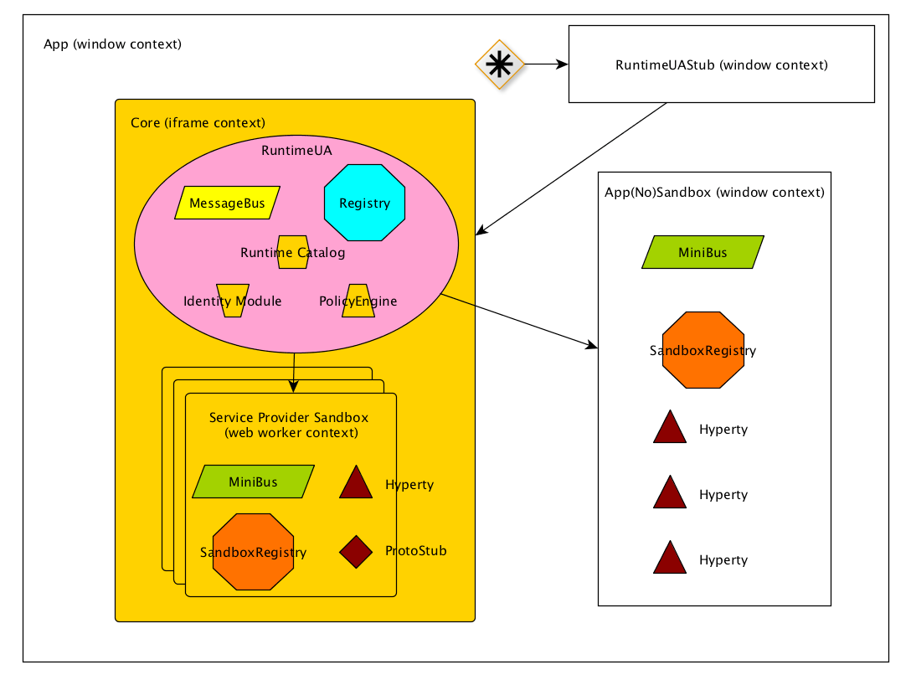

dev-runtime-browser
Overview
This repository contain the code necessary to execute the reTHINK runtime core in a browser. reTHINK runtime core can also be executed in other Javascript runtimes such as Node.js.
The execution of the core runtime takes place in an iFrame which isolates it from the main application runtime (the window where the App javascript code is being executed). The only way to transmit messages between the main window and the iFrame is through the postMessage() method. This way, main application javascript code can not interact with the reTHINK runtime.
Addtionally to the iFrame, all the hyperties and protoStub will be executed as independient Web Workers (which will extend the sandBox class from the dev-core-runtime repository). This way we keep Hyperties and protoStub runtimes not directly accessible from the core runtime but using also the postMessage() mechanism.
User view
Setup Environment
Configure dependencies
npm install -g karma-cli gulp-cli
npm install
Example of use
Refer to dev-hyperty-toolkit to get an example of use
Distributable files
rethink.js. It is the public interface. It exposes two methods:
- requireHyperty(hypertyDescriptor, reuseAddress)
requireProtoStub(domain)
Moreover it create the ContextApp, where the hyperties are loaded and the iframe where the core is loaded.
context-core.js. It includes the runtime core (RuntimeUA, MiniBus and SandBox) and defines browser implementations of SandboxFactory, SandboxWorker and SandboxApp. SandboxWorker and SandboxApp are responsibles for manage communication between boundaries.
context-service.js It is responsible for load hyperties and protostub like ContextApp but in an isolated way.
index.html
Developer view
How does it work?

What is a Sandbox?
From a conceptual point of view, a SandBox is an isolated place where part of the code is run without creating any side effects to the rest of the components. The problems come when we try to explain it from an implementation point of view. A Sandbox has two part, an external part, what is the real Sandbox, and an internal part what is only a proxy to deliver and recover the messages from and to the real sandbox through all the layers that compound the runtime-browser such as iframes, web workers, and shared workers.

The communication between the MiniBus through the border is not possible, and we have to carry the communication through a open channel.
RuntimeUAStub responsibilities:
- Expose loadHyperty and loadProtoStub to client app.
- if Core Sandbox doesn't exist it creates Core Sandbox.
- Route messages from client app to core and vice versa.
- Create AppSandbox when RuntimeUA set it. Virtually AppSandbox is created by RuntimeUA, but due to AppSandbox is running in the window context it should be created by RuntimeUAStub. RuntimeUA will send a message asking it to RuntimeUAStub.
Core/Service Provider Sandbox responsibilities:
- Isolate RuntimeUA from client app.
- Manage all the communication from and to internal components.
AppSandbox
- Manage all the communication from and to internal components.
Unit Testing
Unit testing can be launched manually with npm test.
Javascript Environment
JavaScript code should be written in ES6. There are direct dependencies from nodejs and npm, these can be installed separately or in conjunction with nvm
Dependencies
- nodejs
- npm
- karma - Make the communication between unit test tool and jenkins. See more on karma
- mocha - Unit test tool. See more on http://mochajs.org
- gulp - Automate and enhance your workflow. See more about gulp on gulp
Code Style and Hinting
On the root directory you will find .jshintrc, this file is a helper to maintain syntax consistency, it signals syntax mistakes and makes the code equal for all developers.
- jshint - Detect errors and potential problems in JavaScript code.
All IDE's and Text Editors can handle these tools.